Mining Loader Test Cycle
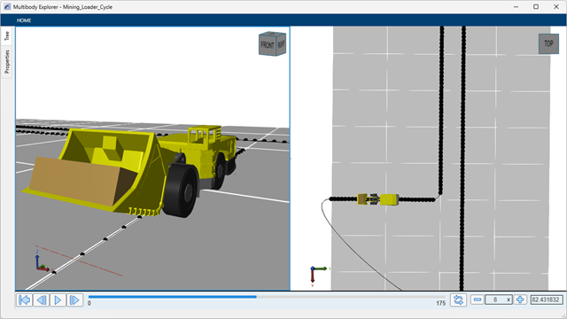
This example models a mining loader. The loader has an articulated chassis with two driven wheels on the chassis and two driven wheels on the front frame. A single power source powers both axles. The bucket is attached to an arm that is lifted by two hydraulic cylinders. The bucket is tilted by a cylinder that connects to the bucket via a z-linkage.
For the test cycle, the loader follows one lane to a right-angle turn. Partway down that passage, the loader stops and raises the arm and bucket. The loader reverses out of that passage, and then follows a separate lane back to a position near the start. The bucket then tilts to empty its load.
(return to Mining Loader Design with Simscape Overview)
Contents
- Model
- Mining Loader Model
- Vehicle Model
- Chassis Model
- Implement Model
- Steer Actuation Model
- Steer Actuation, Hinge Motion
- Steer Actuation, Left Cylinder Extension
- Steer Actuation, Cylinder Actuation
- Drivetrain Model
- Transmission Model
- Motor Model
- Virtual Braking Sensor Model
- Simulation Results: Load Cycle, Hinge Motion
- Simulation Results: Load Cycle, Cylinder Motion
- Simulation Results: Load Cycle, Cylinder Actuation
Model
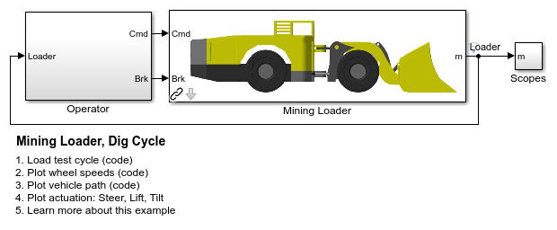
Mining Loader Model
The mining loader model consists of the actuation system, powertrain, and the vehicle chassis with the implement. The surface upon which the vehicle drives can be selected as well.
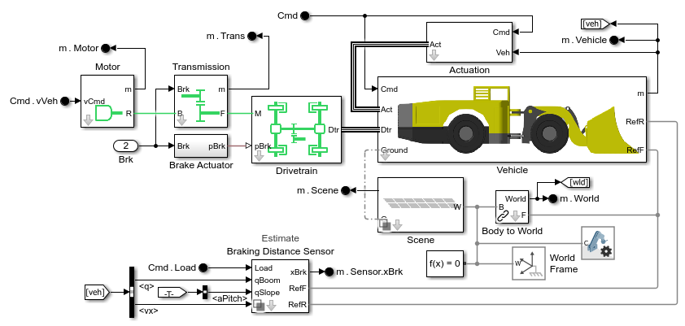
Vehicle Model
The vehicle model contains the articulated chassis with a hinge connecting the chassis to the frame. The implement attaches to the frame Two wheels on the rear frame and two wheels on the front frame are connected via driveshafts to the drivetrain Contact forces enable the tires to ride over the selected surface.
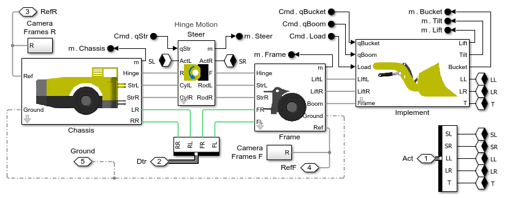
Chassis Model
The chassis is the rear portion of the loader. Two powered wheels connect to the housing.
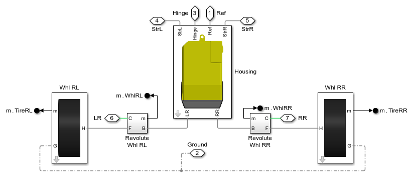
Implement Model
The implement subsystem houses the arm and the bucket linkage. Two actuation systems position the bucket by lifting the arm and tilting the bucket.
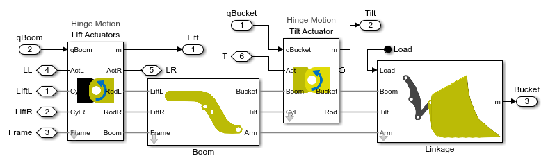
Steer Actuation Model
Two opposing hydraulic cylinders act to steer the loader. Three methods of modeling the actuation system are provided.
- Hinge Motion: Motion of the hinge is prescribed with an input signal
- Left Cylinder Motion: Only the motion of the left cylinder is prescribed with an input signal
- Cylinder Actuation: Both cylinders are actuated using a Simscape model of the actuator.
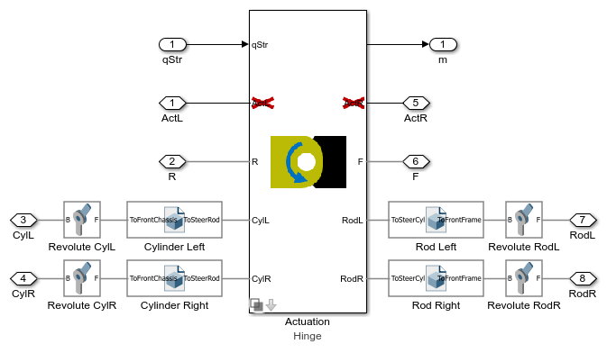
Steer Actuation, Hinge Motion
The hinge motion variant prescribes the motion of the hinge connecting the chassis and frame. The simulation calculates the amount of torque it would take to move the hinge. This result can be used to size steering actuators. A similar option exists for the lift arm and the bucket tilt actuation systems.
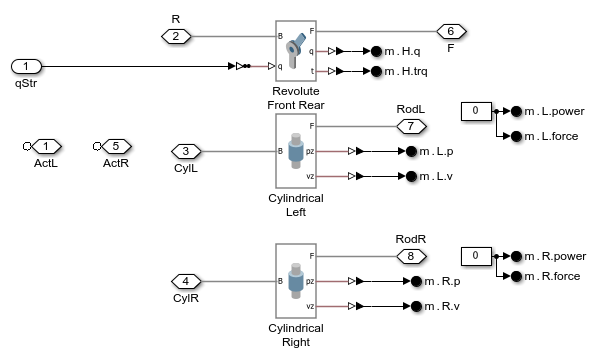
Steer Actuation, Left Cylinder Extension
The left cylinder motion variant prescribes the motion of the left cylinder connecting the chassis and the frame. The simulation calculates the amount of force it would take to produce this motion. This result can be used to size steering actuators. A similar option exists for the lift arm and the bucket tilt actuation systems.
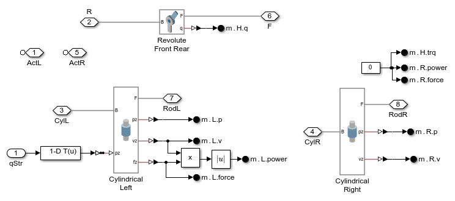
Steer Actuation, Cylinder Actuation
The cylinder actuation variant connects a 1D Simscape actuation model to the joints modeling the cylinder extension. This variant enables engineers to size actuators, design actuation systems, and develop steering control systems. A similar option exists for the lift arm and the bucket tilt actuation systems.
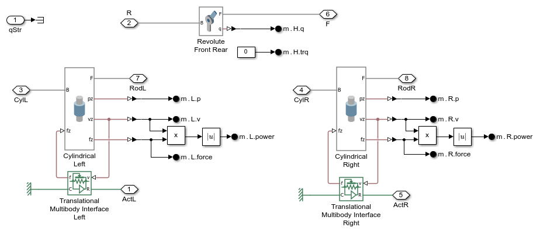
Drivetrain Model
The drivetrain connects all four wheels via two differentials. Each wheel driveshaft is modeled as a flexible shaft. All four wheels have disc brakes.
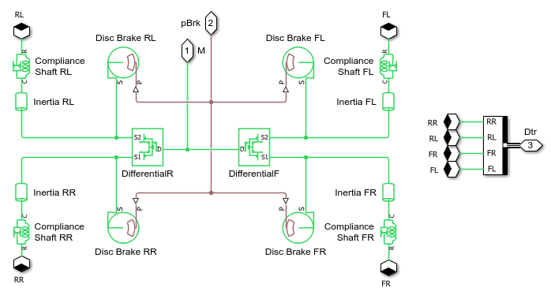
Transmission Model
A variable-ratio transmission block permits any transmission ratio between the input and output shafts. To keep the model numerically efficient, a gear ratio of 1 is used when the vehicle is moving, and the ratio is set to 0 when the vehicle is not moving. This model is only compatible with a very abstract motor model.
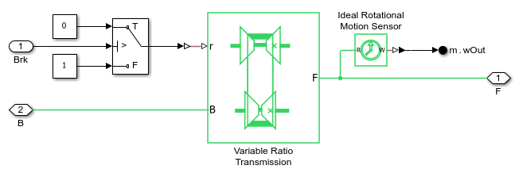
Motor Model
The motor model is an ideal velocity source. It will spin the output shaft at the commanded speed, and that speed is calculated based on the target vehicle speed and wheel radius.
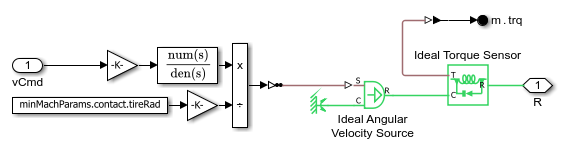
Virtual Braking Sensor Model
A machine learning model is used to estimate braking distance. The current bucket load, vehicle pitch, boom angle, and vehicle speed are provided as inputs, and the trained Regression Gaussian Process model estimates the braking distance. Variable Brick Solid blocks visualize the braking distance in the animation.
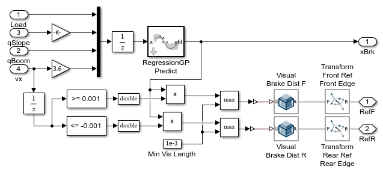
Simulation Results: Load Cycle, Hinge Motion
For the test cycle, the loader follows one lane to a right-angle turn. Partway down that passage, the loader stops and raises the arm and bucket. The loader reverses out of that passage, and then follows a separate lane back to a position near the start. The bucket then tilts to empty its load.
To accomplish this cycle, the test is defined with two sets of inputs. The path-following portion is specified by providing a closed-loop driver model a target speed and heading angle for each point along the trajectory. Note that this definition is with respect to distance, not time. This covers first phase of the maneuver, reaching the end of the passage, and the final stage of the maneuver where the loader returns to the start position.
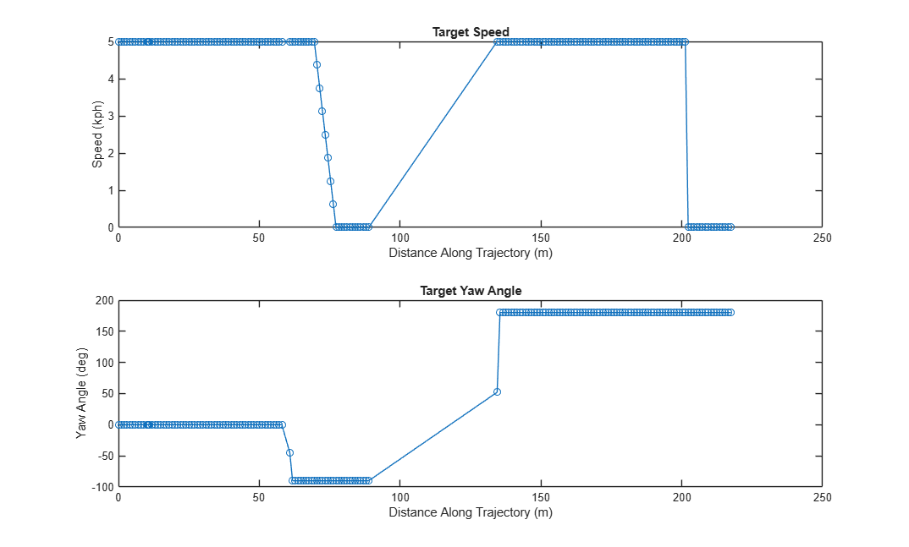
The middle phase of the maneuver is conducted open loop. The steering angle and vehicle speed are specified as the loader reverses out of the passage and aligns with the return lane.
To switch between closed-loop control and open-loop control, the closed-loop commands are overridden in a subsystem downstream of the closed-loop driver model. For a period of time, the commands of the closed-loop driver are ignored. The periods of time where the closed-loop driver commands are ignored are cited on this plot.
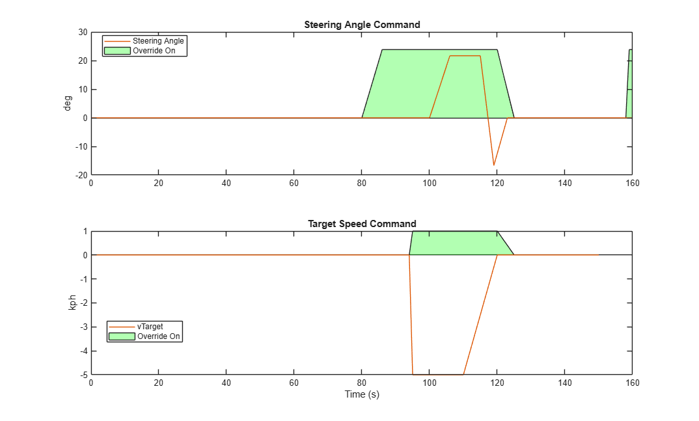
The plot below shows the wheel speeds during the maneuver. During turns, the wheel speeds differ slightly from the vehicle speed as the wheels on the outside of the turn spin faster than the wheels on the inside of the turn.
The plot below shows the path of the mining loader during the maneuver. Note that a portion of the trajectory is performed open-loop, as the loader transitions from the pile to the return path.
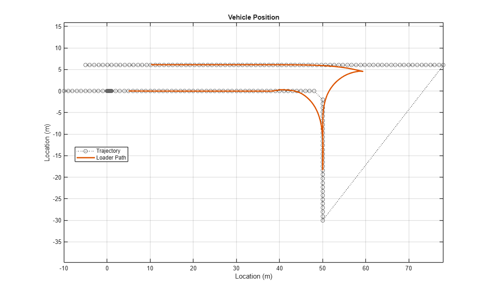
The actuation during this test is prescribed motion to the "hinge" joints for steering, lifting, and tilting. The plot below shows the articulation angle, torque required to move that joint, and the actuator extensions. This helps size actuators, including range of travel and force.
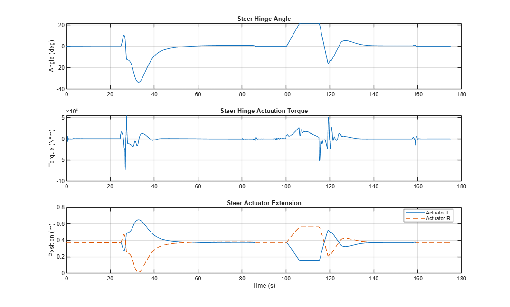
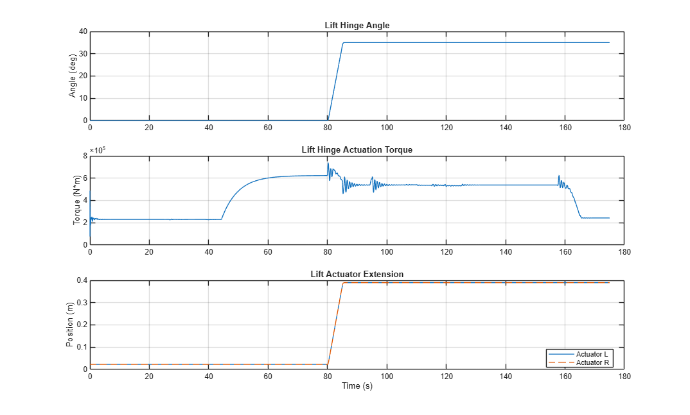
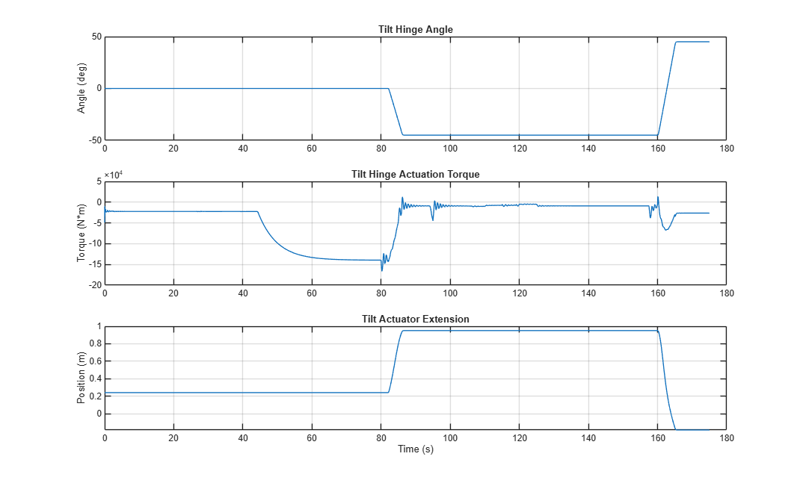
Simulation Results: Load Cycle, Cylinder Motion
The same test cycle is performed, but in this test we prescribe the motion of one cylinder per hinge (steer, lift, tilt).
The plot below shows the wheel speeds during the maneuver.
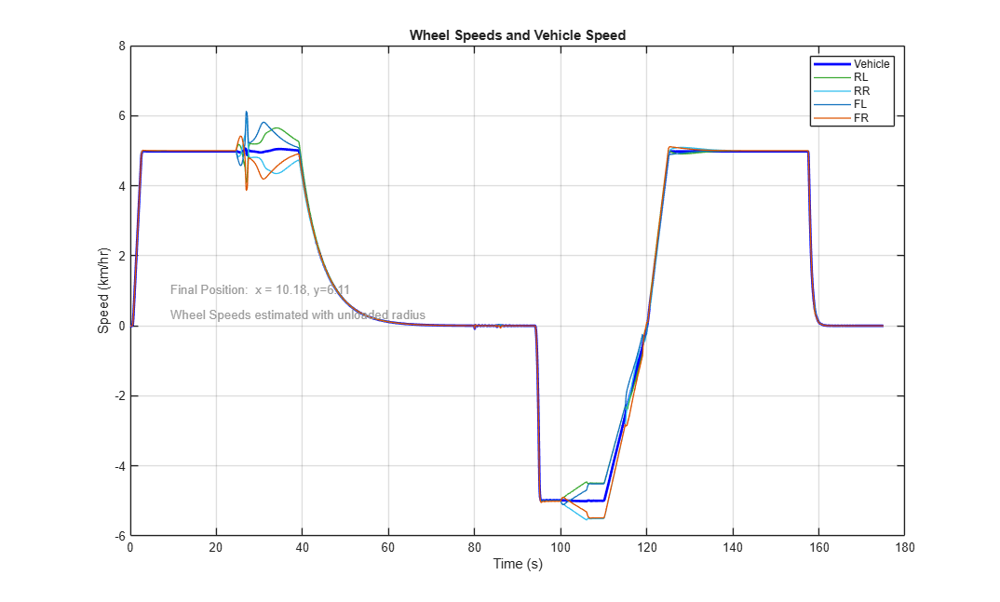
The actuation during this test is prescribed motion to one of the actuation cylinders. The plot below shows the articulation angle, actuator extensions, and force required for one actuator. This helps size actuators, including range of travel and force.
Note that we are only measuring the force required for a single actuator, so for steering and lifting the reported force will be higher than would be required for a pair of actuators.
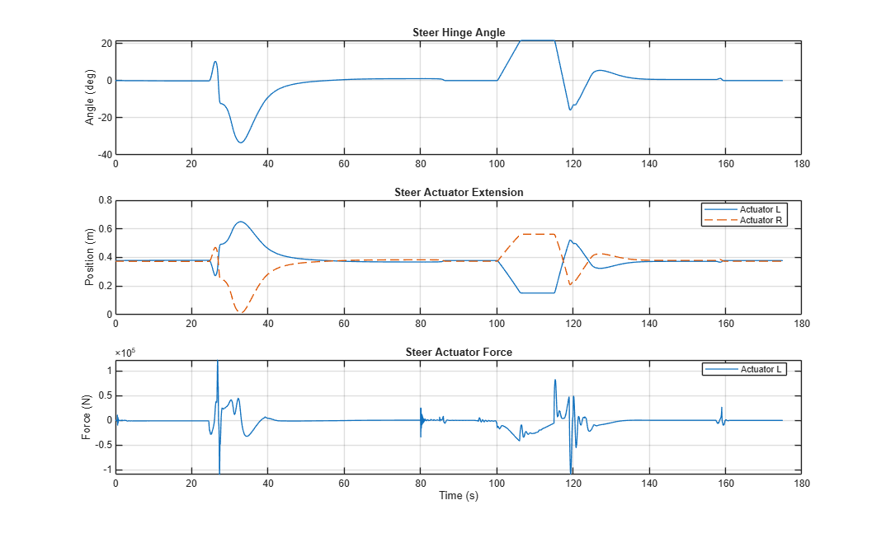
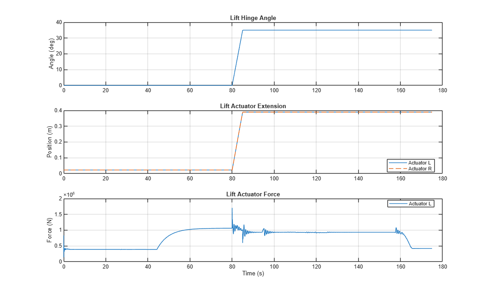
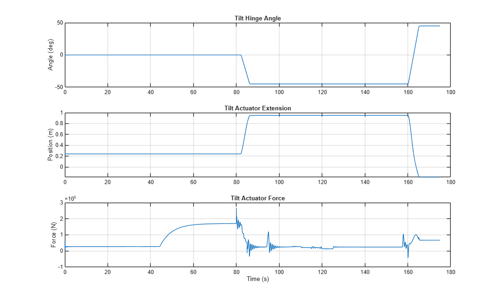
Simulation Results: Load Cycle, Cylinder Actuation
The same test cycle is performed, but in this test we use ideal force actuation for all actuation systems (steer, lift, tilt).
The plot below shows the wheel speeds during the maneuver.
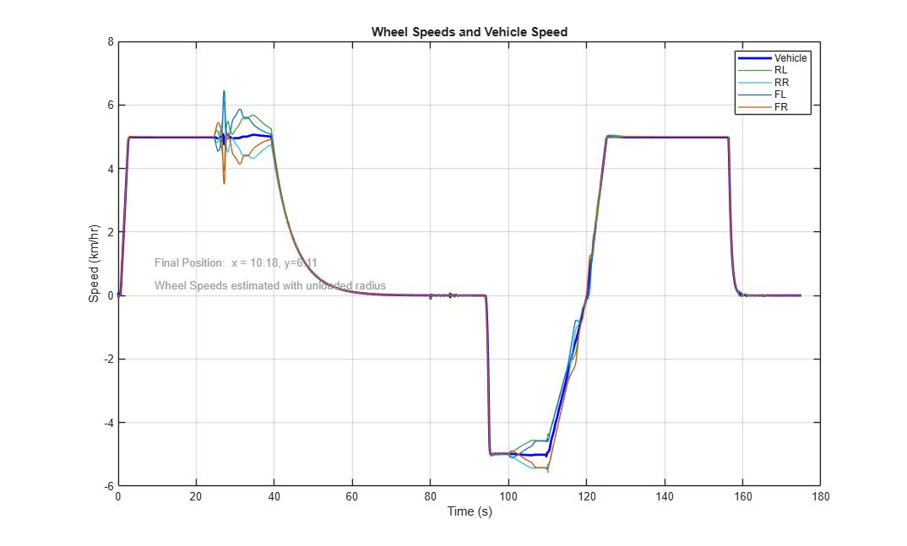
The actuation during this test is ideal force actuation to all cylinders. The plot below shows the articulation angle, actuator extensions, and force required for one actuator. This helps size actuators, including range of travel and force.
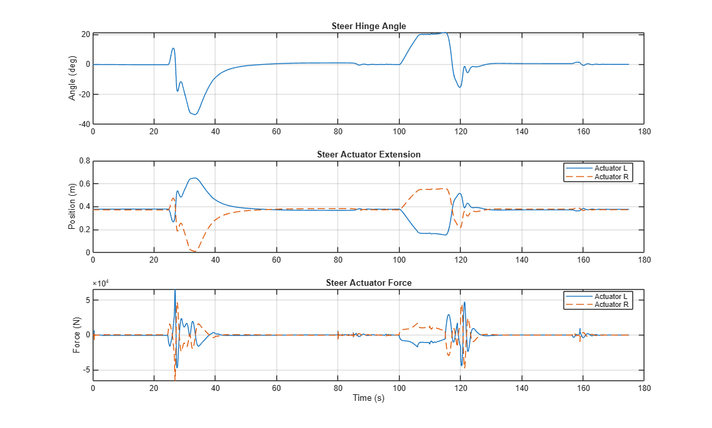
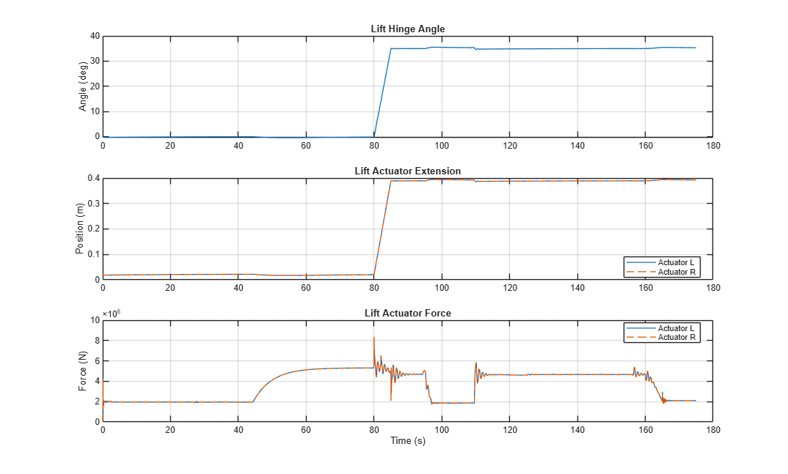
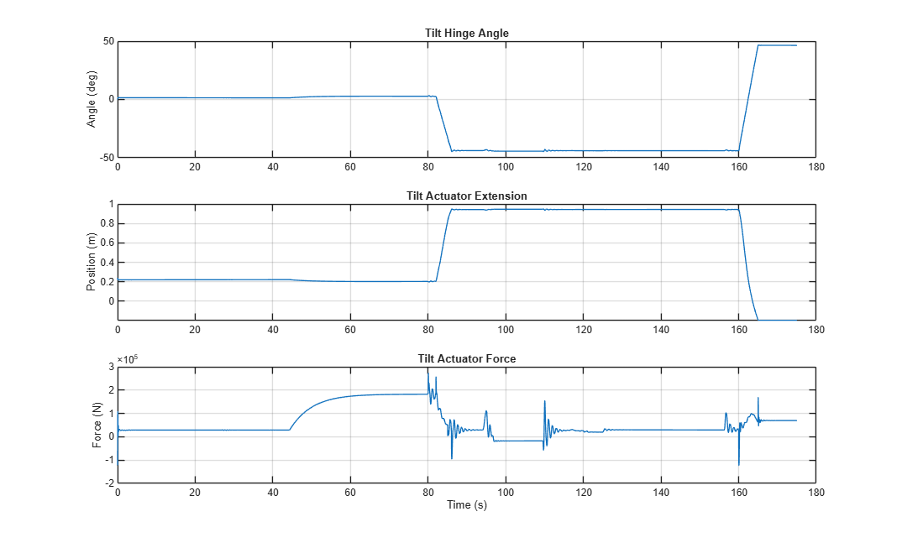